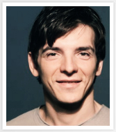
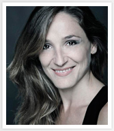
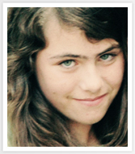
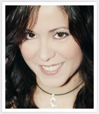

Cast & Crew
Josep Albert
Licenciado en Arte Dramático por la Real Escuela Superior de Arte Dramático. Se ha formado en el Teatre Jove (Fundación Shakespeare), la Cía Nacional de Teatro Clásico y ha estudiado con Tapa Sudana, Peter Bogdanov y Ulla Alasjarvï (Odin Teatre) entre otros.
Destacan sus trabajos en teatro con más de treinta obras representadas: El ignorante y el demente (J. Candeias), El mercader amante (Jaime Puyol) en la que también ha sido ayudante de dirección, La vida es sueño (Pérez de la Fuente), Hedda Gabler (Ernesto Caballero) y varias obras dirigidas por Juan Pastor.
En cine y tv ha participado en Memoria de España, Amar en tiempos revueltos y ha protagonizado varios cortometrajes de ficción.
josepalbert.webs.com
Rebeca Ledesma
Licenciada en Arte Dramático por la Real Escuela Superior de Arte Dramático. También ha estudiado dirección con Eva Parra y Francisco Vidal.
En cine y tv ha participado en varios cortometrajes e intervenido en series como El Comisario, Aquí no hay quien viva, De repente los Gómez y Raphael.
Ha participado en más de una veintena de obras teatrales y, actualmente, se encuentra en la sala Matadero de Madrid con Incrementum, dirigida por Sergio Peris Mencheta.
rebecaledesma.com
Paz García
Debuta con Apaga la luz. Leticia, su personaje, es la absoluta protagonista del cortometraje y la jovencísima actriz ha sabido dotarle de todos los matices interpretativos que el papel exigía.
Posteriormente, ha trabajado en el cortometraje Red y protagonizado Familia Feliz y Hombres Máquina, así como en diferentes videoclips (El baile, Malos Tiempos).
Actualmente compagina su formación académica y su entrenamiento actoral con Kat Dagover.
Kat Dagover
Formada en la Diplomatura de interpretación para cine y tv del Instituto del Cine de Madrid e interpretación textual Metropolis C.E.
Ha estudiado interpretación con Esteban Roel, Carla Carpalsoro y Clara Cosials, voz y doblaje con Carlos Tostado y dirección con Juan Fernando Andrés entre otras especialidades.
Ha trabajado en proyectos audiovisuales de todo tipo de géneros hasta la fecha. Destacan sus protagónicos en varias obras de Juan Fernando Andrés (036, Lorena), o sus locuciones en Miedo, de Jaume Balagueró (Rec, Los sin nombre), y Asesinos, ¿dígame?, de Raquel Polo.
katdagover.com